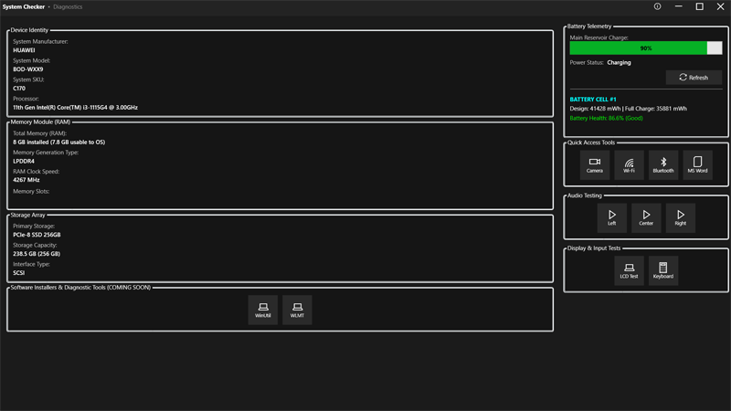

[ ESCAPE // CLOSE_INTERFACE ]
System operational matrix deployed to orchestrate core automation protocols and maximize enterprise infrastructure efficiency.
Specializing in the development of lightweight utility programs engineered to ingest critical system telemetry, accelerate data retrieval cycles, and eliminate processing delays across desktop and network environments.
Engineering lightweight native compilation programs designed to scrape, aggregate, and parse system hardware telemetry data across enterprise networks.
Optimizing operational efficiency by building automated workflow pipelines that eliminate manual processing bottlenecks and accelerate information gathering cycles.
Developing automation systems engineered to scale efficiency metrics while eliminating system logging overhead constraints.
Active Module: System Checker
